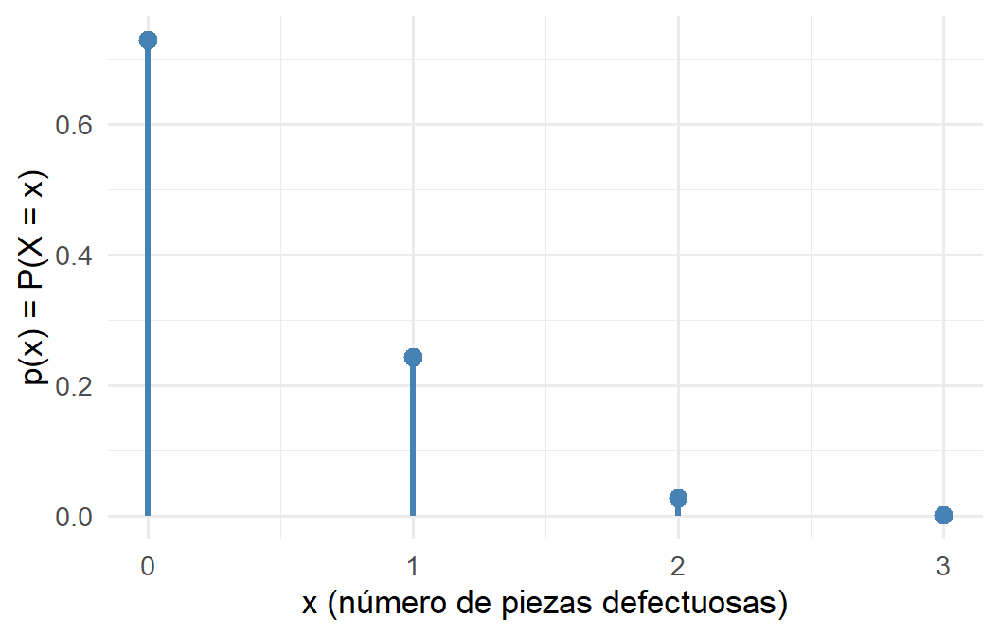
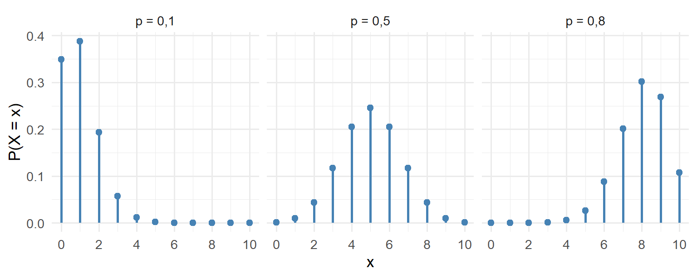
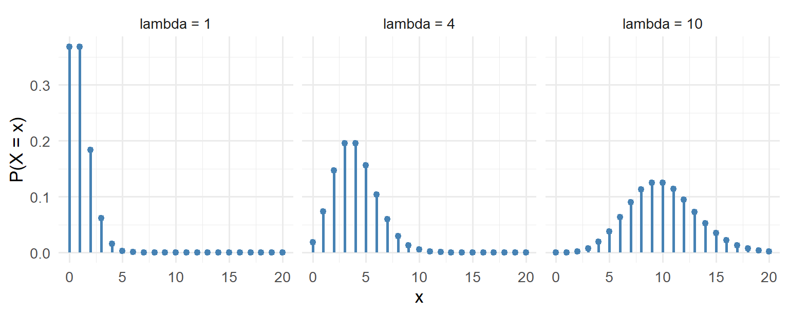
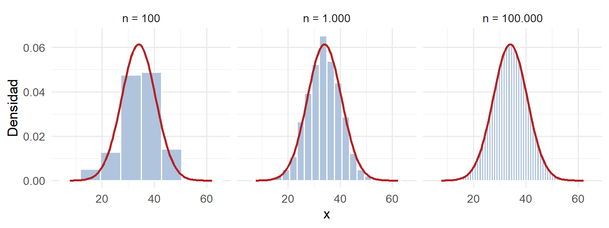
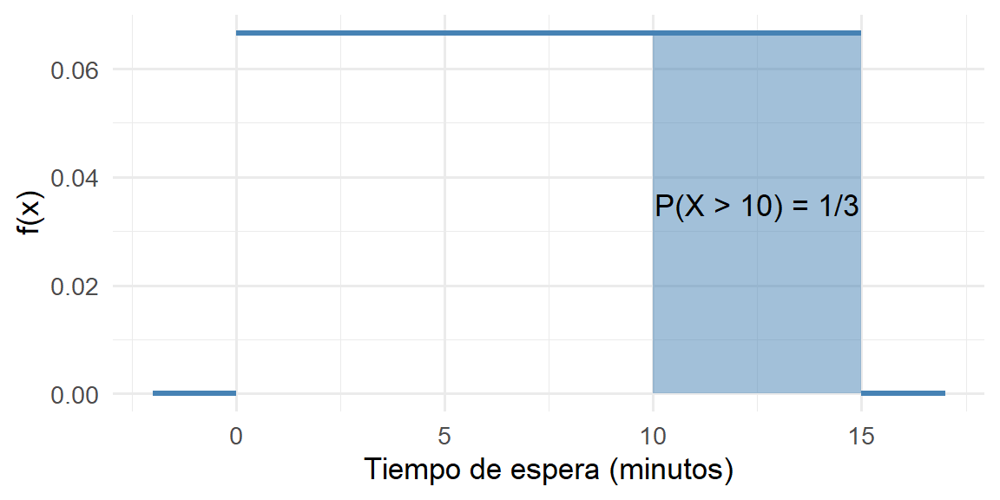
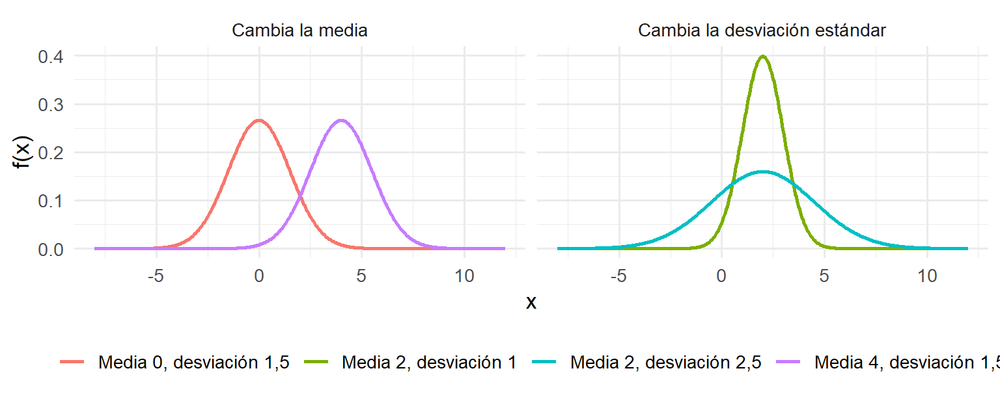
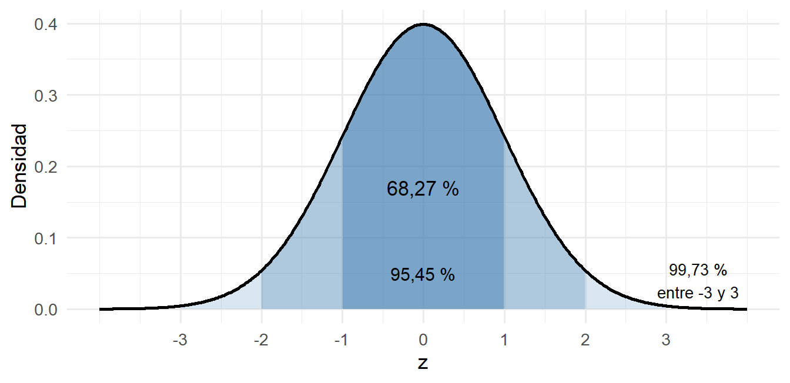
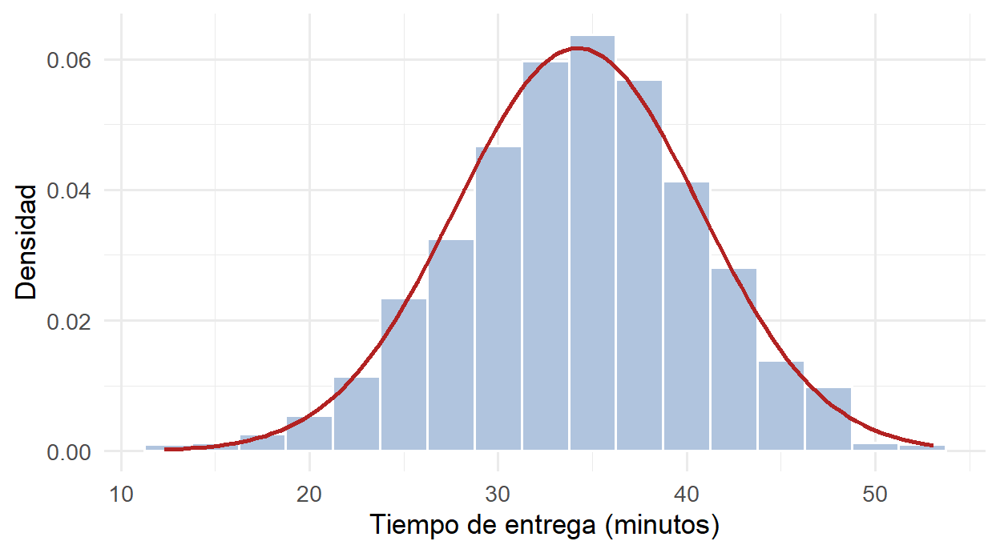
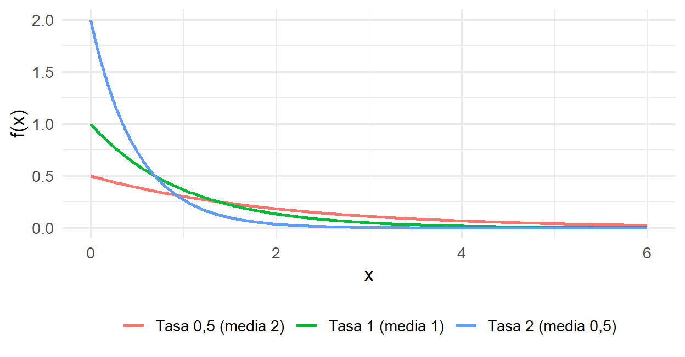

Capítulo 3: Variables aleatorias y distribuciones de probabilidad
Objetivos del capítulo
Al terminar este capítulo, usted estará en capacidad de:
- definir una variable aleatoria y distinguir entre variables discretas y continuas;
- describir una variable aleatoria mediante su función de probabilidad o de densidad y su función de distribución acumulada;
- calcular e interpretar el valor esperado y la varianza;
- reconocer y aplicar las distribuciones binomial, de Poisson, hipergeométrica, uniforme, normal y exponencial;
- calcular probabilidades y cuantiles de estas distribuciones con R.
En el capítulo 1 describimos datos ya observados con tablas, gráficos y medidas como la media y la desviación estándar. En el capítulo 2 aprendimos a calcular probabilidades de eventos. Este capítulo une las dos ideas: un modelo de probabilidad describe cómo se comportaría una variable si pudiéramos observarla infinitas veces, y sus características (su “media” y su “desviación estándar” teóricas) son los parámetros que, en el curso de Estadística II, aprenderemos a estimar a partir de una muestra (Devore, 2008, p. 95).
1 Variables aleatorias
En muchos experimentos aleatorios no interesa el resultado detallado, sino un número asociado a él. Al inspeccionar tres piezas, el inspector anota el resultado completo (\(NND\), \(DND\), …), pero lo que realmente le importa es cuántas son defectuosas.
Definición 1 (Variable aleatoria) Una variable aleatoria es una función que asigna un número real a cada resultado del espacio muestral de un experimento aleatorio. Las variables aleatorias se denotan con letras mayúsculas, como \(X\), \(Y\) o \(Z\), y los valores que toman, con letras minúsculas, como \(x\), \(y\) o \(z\).
Ejemplo 1 Al inspeccionar tres piezas, sea \(X\) el número de piezas defectuosas. La Tabla 1 muestra el valor que \(X\) asigna a cada resultado del espacio muestral.
| Resultado | \(NNN\) | \(NND\) | \(NDN\) | \(DNN\) | \(NDD\) | \(DND\) | \(DDN\) | \(DDD\) |
|---|---|---|---|---|---|---|---|---|
| \(X\) | 0 | 1 | 1 | 1 | 2 | 2 | 2 | 3 |
El evento “exactamente una pieza es defectuosa” se escribe ahora, de forma compacta, \(\{X = 1\} = \{NND, NDN, DNN\}\).
Igual que las variables del capítulo 1, las variables aleatorias se clasifican según los valores que pueden tomar.
Definición 2 (Variables aleatorias discretas y continuas) Una variable aleatoria es discreta si toma un número finito o infinito numerable de valores, que pueden enumerarse; habitualmente surge de contar. Es continua si puede tomar cualquier valor en un intervalo de números reales; habitualmente surge de medir.
Son discretas el número de piezas defectuosas en un lote, el número de clientes que llegan a un banco en una hora o el número de pizzas de un pedido. Son continuas el tiempo de entrega de una pizza, la resistencia de un cilindro de concreto o el ingreso de un hogar. Observe la relación con el capítulo 2: una variable discreta proviene de un espacio muestral discreto, y una continua, de uno continuo.
2 Distribuciones de probabilidad discretas
Para describir una variable aleatoria discreta basta con decir qué valores puede tomar y con qué probabilidad toma cada uno.
Definición 3 (Función de probabilidad) La función de probabilidad (o función de masa de probabilidad) de una variable aleatoria discreta \(X\) es \[ p(x) = P(X = x) \] para cada valor posible \(x\). Debe cumplir dos condiciones: \[ p(x) \ge 0 \quad \text{para todo } x \qquad \text{y} \qquad \sum_{x} p(x) = 1 . \] El conjunto de valores posibles de \(X\) junto con sus probabilidades se llama distribución de probabilidad de \(X\).
Ejemplo 2 Supongamos que cada pieza es defectuosa con probabilidad 0,1, de manera independiente de las demás. Por la independencia, la probabilidad de un resultado como \(NND\) es \(0{,}9 \times 0{,}9 \times 0{,}1 = 0{,}081\), y como hay tres resultados con exactamente una pieza defectuosa, \(P(X = 1) = 3 \times 0{,}081 = 0{,}243\). Calculando así cada valor se obtiene la distribución de la Tabla 2, representada en la Figura 1.
| \(x\) | 0 | 1 | 2 | 3 | Total |
|---|---|---|---|---|---|
| \(p(x)\) | 0,729 | 0,243 | 0,027 | 0,001 | 1 |
| \(F(x)\) | 0,729 | 0,972 | 0,999 | 1 |
El gráfico de la función de probabilidad es un diagrama de bastones, como los que usamos en el capítulo 1 para variables discretas: la diferencia es que allí las alturas eran frecuencias relativas observadas en una muestra, y aquí son probabilidades de un modelo.
Definición 4 (Función de distribución acumulada) La función de distribución acumulada de una variable aleatoria \(X\) es \[ F(x) = P(X \le x), \qquad -\infty < x < \infty . \] Para una variable discreta, \(F(x) = \sum_{t \le x} p(t)\).
La función de distribución acumulada es la versión teórica de la frecuencia relativa acumulada \(H_i\) del capítulo 1 (y de la ojiva). Es no decreciente, vale 0 a la izquierda de todos los valores posibles y 1 a la derecha, y permite calcular la probabilidad de cualquier intervalo: \[ P(a < X \le b) = F(b) - F(a) . \] En el ejemplo, la probabilidad de encontrar a lo sumo una pieza defectuosa es \(F(1) = 0{,}972\), y la de encontrar al menos una es \(P(X \ge 1) = 1 - F(0) = 1 - 0{,}729 = 0{,}271\).
3 Valor esperado y varianza
Así como la media y la varianza resumen un conjunto de datos, el valor esperado y la varianza resumen una distribución de probabilidad.
Definición 5 (Valor esperado) El valor esperado (o esperanza, o media) de una variable aleatoria discreta \(X\) con función de probabilidad \(p(x)\) es \[ \mu = E(X) = \sum_{x} x\, p(x) . \]
El valor esperado es un promedio de los valores posibles, ponderado por sus probabilidades. Por la interpretación frecuentista, es el valor al que se acercaría el promedio de los resultados si el experimento se repitiera muchísimas veces. Compare con la media de una tabla de frecuencias del capítulo 1, \(\bar{x} = \sum x_i h_i\): la fórmula es la misma, con las frecuencias relativas observadas reemplazadas por probabilidades.
Definición 6 (Varianza y desviación estándar) La varianza de una variable aleatoria discreta \(X\) con media \(\mu\) es \[ \sigma^2 = V(X) = \sum_{x} (x - \mu)^2\, p(x) = E(X^2) - \mu^2, \qquad \text{con} \qquad E(X^2) = \sum_{x} x^2\, p(x), \] y su desviación estándar es \(\sigma = \sqrt{\sigma^2}\).
La segunda forma de la varianza, \(E(X^2) - \mu^2\), suele ser más cómoda para calcular a mano.
Ejemplo 3 Para el número de piezas defectuosas de la Tabla 2: \[ E(X) = 0 \times 0{,}729 + 1 \times 0{,}243 + 2 \times 0{,}027 + 3 \times 0{,}001 = 0{,}3 , \] \[ E(X^2) = 0^2 \times 0{,}729 + 1^2 \times 0{,}243 + 2^2 \times 0{,}027 + 3^2 \times 0{,}001 = 0{,}36 , \] de modo que \(V(X) = 0{,}36 - 0{,}3^2 = 0{,}27\) y \(\sigma = \sqrt{0{,}27} \approx 0{,}52\). Si se inspeccionaran muchos grupos de tres piezas, se encontrarían en promedio 0,3 piezas defectuosas por grupo.
Ejemplo 4 El negocio de los seguros. Una aseguradora vende una póliza de vida a un año por 500 000 pesos. Si el asegurado fallece durante el año, lo que ocurre con probabilidad 0,002, la aseguradora paga 100 millones. Sea \(G\) la ganancia de la aseguradora con una póliza: \(G = 500\,000\) con probabilidad 0,998 y \(G = 500\,000 - 100\,000\,000 = -99\,500\,000\) con probabilidad 0,002. Entonces \[ E(G) = 500\,000 \times 0{,}998 + (-99\,500\,000) \times 0{,}002 = 300\,000 . \] En una sola póliza la aseguradora puede perder mucho dinero, pero en promedio, sobre miles de pólizas, gana 300 000 pesos por cada una. Así es como la probabilidad permite que exista el negocio de los seguros.
El valor esperado y la varianza tienen propiedades muy útiles cuando la variable se transforma linealmente, por ejemplo, al cambiar de unidades (compárelas con el ejercicio 13 del capítulo 1).
Teorema 1 (Propiedades del valor esperado y la varianza) Para una variable aleatoria \(X\) y constantes \(a\) y \(b\): \[ E(aX + b) = a\,E(X) + b \qquad \text{y} \qquad V(aX + b) = a^2\,V(X) . \]
Sumar una constante desplaza la media pero no cambia la dispersión; multiplicar por una constante multiplica la media por \(a\) y la varianza por \(a^2\) (y, por tanto, la desviación estándar por \(|a|\)).
4 Distribución binomial
Algunas distribuciones aparecen con tanta frecuencia que tienen nombre propio. La primera de ellas modela el número de “éxitos” en una serie de ensayos independientes.
Definición 7 (Ensayo de Bernoulli) Un ensayo de Bernoulli es un experimento aleatorio con solo dos resultados posibles, que llamamos éxito y fracaso, donde el éxito ocurre con probabilidad \(p\) y el fracaso con probabilidad \(1 - p\).
“Éxito” no significa algo deseable: es simplemente el resultado que se cuenta. Una pieza defectuosa, un cliente que no paga o un paciente que responde al tratamiento pueden ser “éxitos”.
Definición 8 (Distribución binomial) Un experimento binomial cumple cuatro condiciones:
- consiste en un número fijo \(n\) de ensayos;
- cada ensayo es un ensayo de Bernoulli;
- la probabilidad de éxito \(p\) es la misma en todos los ensayos;
- los ensayos son independientes.
El número \(X\) de éxitos en los \(n\) ensayos tiene distribución binomial con parámetros \(n\) y \(p\), lo que se escribe \(X \sim \text{Bin}(n, p)\), y su función de probabilidad es \[ P(X = x) = \binom{n}{x} p^x (1 - p)^{n - x}, \qquad x = 0, 1, 2, \ldots, n . \]
La fórmula se justifica con lo visto en el capítulo 2. Una secuencia particular con \(x\) éxitos y \(n - x\) fracasos tiene probabilidad \(p^x (1 - p)^{n - x}\), por la independencia de los ensayos; y hay \({}_{n}C_{x} = \binom{n}{x}\) secuencias distintas con exactamente \(x\) éxitos, según dónde se ubiquen. El número de piezas defectuosas del Ejemplo 2 es, precisamente, una variable \(\text{Bin}(3;\ 0{,}1)\).
Teorema 2 (Media y varianza de la binomial) Si \(X \sim \text{Bin}(n, p)\), entonces \[ E(X) = np \qquad \text{y} \qquad V(X) = np(1 - p) . \]
Para \(\text{Bin}(3;\ 0{,}1)\), \(E(X) = 3 \times 0{,}1 = 0{,}3\) y \(V(X) = 3 \times 0{,}1 \times 0{,}9 = 0{,}27\), los mismos valores que calculamos en el Ejemplo 3 con la definición.
Ejemplo 5 Un proceso de fabricación produce un 5 % de piezas defectuosas. Se toma una muestra de 10 piezas, y \(X\) es el número de defectuosas, de modo que \(X \sim \text{Bin}(10;\ 0{,}05)\).
- Probabilidad de que ninguna sea defectuosa: \(P(X = 0) = \binom{10}{0} 0{,}05^0\, 0{,}95^{10} \approx 0{,}599\).
- Probabilidad de que exactamente una sea defectuosa: \(P(X = 1) = \binom{10}{1} 0{,}05^1\, 0{,}95^{9} \approx 0{,}315\).
- Probabilidad de que dos o más sean defectuosas: \(P(X \ge 2) = 1 - P(X = 0) - P(X = 1) \approx 1 - 0{,}599 - 0{,}315 = 0{,}086\).
- Número esperado de defectuosas: \(E(X) = 10 \times 0{,}05 = 0{,}5\), con desviación estándar \(\sqrt{10 \times 0{,}05 \times 0{,}95} \approx 0{,}69\).
La forma de la distribución binomial depende de \(p\): es asimétrica a la derecha cuando \(p\) es pequeño, simétrica cuando \(p = 0{,}5\) y asimétrica a la izquierda cuando \(p\) es grande (Figura 2).

En R, la función de probabilidad binomial se calcula con dbinom() y la función de distribución acumulada con pbinom():
dbinom(0, size = 10, prob = 0.05) # P(X = 0)[1] 0.5987369dbinom(0:2, size = 10, prob = 0.05) # P(X = 0), P(X = 1), P(X = 2)[1] 0.5987369 0.3151247 0.0746348pbinom(1, size = 10, prob = 0.05) # P(X <= 1)[1] 0.91386161 - pbinom(1, size = 10, prob = 0.05) # P(X >= 2)[1] 0.086138365 Distribución de Poisson
La distribución de Poisson, que lleva el nombre del matemático francés Siméon Denis Poisson, modela el número de veces que ocurre un evento en un intervalo de tiempo, de espacio o de cualquier otra magnitud continua: llamadas que llegan a una central en un minuto, accidentes de tránsito en un día, defectos en un metro de tela o errores en una página (Devore, 2008, p. 124).
Definición 9 (Distribución de Poisson) Una variable aleatoria \(X\) que cuenta el número de ocurrencias de un evento en un intervalo tiene distribución de Poisson con parámetro \(\lambda > 0\), lo que se escribe \(X \sim \text{Poisson}(\lambda)\), si su función de probabilidad es \[ P(X = x) = \frac{e^{-\lambda} \lambda^x}{x!}, \qquad x = 0, 1, 2, \ldots \]
El modelo es adecuado cuando las ocurrencias suceden de manera independiente unas de otras, a una tasa promedio constante, y nunca dos exactamente al mismo tiempo. El parámetro \(\lambda\) es el número promedio de ocurrencias en el intervalo, y tiene una propiedad muy particular:
Teorema 3 (Media y varianza de la Poisson) Si \(X \sim \text{Poisson}(\lambda)\), entonces \(E(X) = V(X) = \lambda\).
Ejemplo 6 Una central de atención recibe en promedio 3 llamadas por minuto. Si \(X\) es el número de llamadas en un minuto, \(X \sim \text{Poisson}(3)\).
- Probabilidad de que en un minuto no llegue ninguna llamada: \(P(X = 0) = e^{-3} \approx 0{,}050\).
- Probabilidad de que lleguen a lo sumo dos: \(P(X \le 2) = e^{-3}\left(1 + 3 + \frac{3^2}{2!}\right) = 8{,}5\, e^{-3} \approx 0{,}423\).
- Probabilidad de que lleguen más de cinco, lo que saturaría a los operadores: \(P(X > 5) = 1 - P(X \le 5) \approx 0{,}084\).
- Si el intervalo cambia, el parámetro cambia en la misma proporción: en dos minutos llegan en promedio 6 llamadas, de modo que el número de llamadas en dos minutos es \(\text{Poisson}(6)\).

Como muestra la Figura 3, la distribución es muy asimétrica a la derecha cuando \(\lambda\) es pequeño y se vuelve más simétrica a medida que \(\lambda\) crece.
La Poisson como aproximación de la binomial
Cuando \(n\) es grande y \(p\) es pequeño, una binomial \(\text{Bin}(n, p)\) se parece mucho a una \(\text{Poisson}(\lambda)\) con \(\lambda = np\). Por ejemplo, si el 0,2 % de los productos tiene un defecto grave y se revisan 1000, el número de productos con ese defecto es \(\text{Bin}(1000;\ 0{,}002)\), y \(P(X \le 1) \approx 0{,}4057\). Con la Poisson de parámetro \(\lambda = 1000 \times 0{,}002 = 2\) se obtiene \(P(X \le 1) = e^{-2}(1 + 2) \approx 0{,}4060\), prácticamente igual. Por eso a la Poisson se le llama a veces la “ley de los eventos raros”.
En R se usan dpois() y ppois():
dpois(0, lambda = 3) # P(X = 0)[1] 0.04978707ppois(2, lambda = 3) # P(X <= 2)[1] 0.42319011 - ppois(5, lambda = 3) # P(X > 5)[1] 0.083917946 Distribución hipergeométrica
La binomial supone ensayos independientes con probabilidad de éxito constante, lo que ocurre al muestrear con reemplazo o de una población muy grande. Cuando se muestrea sin reemplazo de una población pequeña, como en el control de calidad de un lote, cada extracción cambia la composición de lo que queda, y la distribución adecuada es la hipergeométrica (Walpole et al., 2012, p. 143).
Definición 10 (Distribución hipergeométrica) Una población tiene \(N\) elementos, de los cuales \(K\) son “éxitos” y \(N - K\) “fracasos”. Se extrae al azar una muestra de \(n\) elementos sin reemplazo. El número \(X\) de éxitos en la muestra tiene distribución hipergeométrica con parámetros \(N\), \(K\) y \(n\), lo que se escribe \(X \sim \text{Hip}(N, K, n)\), y su función de probabilidad es \[ P(X = x) = \frac{\binom{K}{x}\binom{N - K}{n - x}}{\binom{N}{n}}, \] para los valores enteros de \(x\) entre \(\max(0,\ n - N + K)\) y \(\min(n, K)\).
Esta es exactamente la fórmula que usamos en el ejemplo de control de calidad del capítulo 2: se cuentan las formas de elegir \(x\) éxitos entre los \(K\) y \(n - x\) fracasos entre los \(N - K\), y se divide entre el número total de muestras posibles.
Teorema 4 (Media y varianza de la hipergeométrica) Si \(X \sim \text{Hip}(N, K, n)\) y \(p = K/N\) es la proporción de éxitos en la población, entonces \[ E(X) = np \qquad \text{y} \qquad V(X) = np(1 - p)\, \frac{N - n}{N - 1} . \]
La media es la misma de la binomial, y la varianza es la de la binomial multiplicada por el factor de corrección por población finita, \((N - n)/(N - 1)\), que es menor que 1: al muestrear sin reemplazo hay menos variabilidad que con reemplazo.
Ejemplo 7 Retomemos el lote de 20 piezas con 4 defectuosas, del que se eligen 3 al azar: \(X \sim \text{Hip}(20, 4, 3)\). La distribución del número de defectuosas en la muestra es:
| \(x\) | 0 | 1 | 2 | 3 |
|---|---|---|---|---|
| \(P(X = x)\) | 0,491 | 0,421 | 0,084 | 0,004 |
Su media es \(E(X) = 3 \times 4/20 = 0{,}6\) piezas defectuosas, y su varianza, \(V(X) = 3 \times 0{,}2 \times 0{,}8 \times 17/19 \approx 0{,}43\).
¿Binomial o hipergeométrica?
Si la muestra es pequeña en comparación con la población (como regla práctica, si \(n/N < 0{,}05\)), extraer sin reemplazo casi no cambia la composición de la población, y la binomial con \(p = K/N\) da una muy buena aproximación. Por ejemplo, si de un lote de 1000 piezas con 100 defectuosas se eligen 10, la probabilidad de no encontrar ninguna es 0,3469 con la hipergeométrica y 0,3487 con la binomial \(\text{Bin}(10;\ 0{,}1)\).
En R se usan dhyper() y phyper(), pero con otros nombres para los parámetros: m es el número de éxitos en la población (\(K\)), n el de fracasos (\(N - K\)) y k el tamaño de la muestra (\(n\)). Hay que tener cuidado de no confundir la n de R con nuestra \(n\):
dhyper(0:3, m = 4, n = 16, k = 3) # P(X = 0), ..., P(X = 3)[1] 0.491228070 0.421052632 0.084210526 0.003508772phyper(1, m = 4, n = 16, k = 3) # P(X <= 1)[1] 0.9122807La Tabla 4 resume las tres distribuciones discretas.
| Distribución | Qué cuenta | Parámetros | \(E(X)\) | \(V(X)\) | En R |
|---|---|---|---|---|---|
| Binomial, \(\text{Bin}(n, p)\) | Éxitos en \(n\) ensayos independientes | \(n\), \(p\) | \(np\) | \(np(1-p)\) | dbinom(), pbinom() |
| Poisson, \(\text{Poisson}(\lambda)\) | Ocurrencias en un intervalo | \(\lambda\) | \(\lambda\) | \(\lambda\) | dpois(), ppois() |
| Hipergeométrica, \(\text{Hip}(N, K, n)\) | Éxitos en una muestra sin reemplazo | \(N\), \(K\), \(n\) | \(np\) | \(np(1-p)\frac{N-n}{N-1}\) | dhyper(), phyper() |
7 Distribuciones de probabilidad continuas
Una variable continua, como el tiempo de entrega de una pizza, puede tomar cualquier valor de un intervalo. Ya no es posible listar sus valores y asignar una probabilidad a cada uno: hay infinitos valores, y si cada uno tuviera probabilidad positiva, la suma no podría ser 1. Por eso, para variables continuas la probabilidad se asigna a intervalos, mediante una curva (Devore, 2008, p. 132).
7.1 De los histogramas a las curvas
Recordemos el histograma del capítulo 1. Si se dibuja con frecuencias relativas divididas entre la amplitud de las clases (es decir, con densidades), el área de cada rectángulo es la proporción de datos de esa clase, y el área total es 1. A medida que aumenta el número de datos y las clases se hacen más angostas, el contorno del histograma se parece cada vez más a una curva suave (Figura 4). Esa curva es la función de densidad de la variable.

7.2 Función de densidad
Definición 11 (Función de densidad de probabilidad) La función de densidad de probabilidad de una variable aleatoria continua \(X\) es una función \(f(x)\) que cumple:
- \(f(x) \ge 0\) para todo \(x\);
- el área total bajo la curva es 1: \(\displaystyle\int_{-\infty}^{\infty} f(x)\,dx = 1\);
- la probabilidad de que \(X\) esté en un intervalo es el área bajo la curva sobre ese intervalo: \[ P(a \le X \le b) = \int_{a}^{b} f(x)\,dx . \]
La tercera propiedad tiene una consecuencia importante: para una variable continua, la probabilidad de que tome exactamente un valor es cero, porque el área sobre un solo punto es cero: \(P(X = a) = 0\). Por eso, para variables continuas da lo mismo usar desigualdades estrictas o no: \[ P(a \le X \le b) = P(a < X \le b) = P(a \le X < b) = P(a < X < b) . \] Esta es la razón, anunciada en el capítulo 1, por la cual en variables continuas con muchos datos desaparece la diferencia entre “menos de” y “como máximo”. Observe también que \(f(x)\) no es una probabilidad (puede ser mayor que 1): lo que es una probabilidad es el área bajo ella.
Definición 12 (Función de distribución acumulada de una variable continua) La función de distribución acumulada de una variable continua \(X\) es \[ F(x) = P(X \le x) = \int_{-\infty}^{x} f(t)\,dt , \] el área bajo la densidad a la izquierda de \(x\). Con ella, \(P(a \le X \le b) = F(b) - F(a)\).
El valor esperado y la varianza se definen igual que en el caso discreto, reemplazando las sumas por integrales: \[ \mu = E(X) = \int_{-\infty}^{\infty} x\, f(x)\,dx, \qquad \sigma^2 = V(X) = \int_{-\infty}^{\infty} (x - \mu)^2 f(x)\,dx = E(X^2) - \mu^2 , \] y conservan las mismas propiedades e interpretación. En la práctica, casi nunca hace falta calcular estas integrales: para las distribuciones más usadas, la media, la varianza y las probabilidades ya se conocen, y R las calcula directamente.
7.3 La distribución uniforme
El caso más sencillo de distribución continua es aquel en el que todos los valores de un intervalo son “igualmente probables”.
Definición 13 (Distribución uniforme) Una variable \(X\) tiene distribución uniforme en el intervalo \([a, b]\), lo que se escribe \(X \sim U(a, b)\), si su densidad es constante en ese intervalo: \[ f(x) = \frac{1}{b - a}, \qquad a \le x \le b, \] y cero fuera de él. Su media y su varianza son \[ E(X) = \frac{a + b}{2} \qquad \text{y} \qquad V(X) = \frac{(b - a)^2}{12} . \]
Ejemplo 8 Un bus pasa por un paradero cada 15 minutos. Una persona que llega al paradero sin conocer el horario espera un tiempo \(X \sim U(0, 15)\), en minutos. La probabilidad de que espere más de 10 minutos es el área del rectángulo entre 10 y 15 (Figura 5): \[ P(X > 10) = (15 - 10) \times \frac{1}{15} = \frac{1}{3} \approx 0{,}333 . \] En promedio espera \(E(X) = (0 + 15)/2 = 7{,}5\) minutos, con desviación estándar \(\sqrt{15^2/12} \approx 4{,}33\) minutos.

8 Distribución normal
La distribución normal, también llamada gaussiana por el matemático alemán Carl Friedrich Gauss, es la más importante de la estadística. Por un lado, describe bien muchas variables medidas en la naturaleza y en la industria: errores de medición, estaturas, pesos, dimensiones de piezas fabricadas, puntajes de pruebas estandarizadas. Por otro, y sobre todo, es la distribución a la que se aproximan los promedios de muestras grandes, como veremos con el teorema central del límite en el capítulo 4 (Montgomery & Runger, 2018, p. 15; Walpole et al., 2012, p. 172).
Definición 14 (Distribución normal) Una variable aleatoria \(X\) tiene distribución normal con media \(\mu\) y varianza \(\sigma^2\), lo que se escribe \(X \sim N(\mu, \sigma^2)\), si su función de densidad es \[ f(x) = \frac{1}{\sigma\sqrt{2\pi}}\; e^{-\frac{1}{2}\left(\frac{x - \mu}{\sigma}\right)^2}, \qquad -\infty < x < \infty . \]
Sus propiedades principales son:
- tiene forma de campana y es simétrica alrededor de \(\mu\), de modo que su media, su mediana y su moda coinciden en \(\mu\);
- \(\mu\) determina la ubicación del centro y \(\sigma\) la dispersión: cuanto mayor es \(\sigma\), más baja y extendida es la campana (Figura 6);
- la curva tiene sus puntos de inflexión en \(\mu - \sigma\) y \(\mu + \sigma\);
- toma valores en toda la recta real, aunque fuera de \(\mu \pm 3\sigma\) el área es prácticamente nula;
- su asimetría es 0 y su exceso de curtosis también es 0: es la referencia con la que comparamos las medidas de forma del capítulo 1.

8.1 La normal estándar
Hay infinitas distribuciones normales, una para cada par de valores \(\mu\) y \(\sigma\). Afortunadamente, todas se pueden llevar a una sola.
Definición 15 (Normal estándar y estandarización) La normal estándar es la normal con media 0 y varianza 1, y se denota \(Z \sim N(0, 1)\). Su función de distribución acumulada se denota \(\Phi(z) = P(Z \le z)\). Si \(X \sim N(\mu, \sigma^2)\), entonces la variable estandarizada \[ Z = \frac{X - \mu}{\sigma} \] tiene distribución normal estándar.
El valor \(z\) indica a cuántas desviaciones estándar está \(x\) de la media: es la misma estandarización \(z_i = (x_i - \bar{x})/s\) que usamos para transformar variables en el capítulo 1, ahora aplicada a una población. Gracias a ella, cualquier probabilidad de una normal se calcula con la normal estándar: \[
P(X \le x) = P\!\left(Z \le \frac{x - \mu}{\sigma}\right) = \Phi\!\left(\frac{x - \mu}{\sigma}\right).
\] Tradicionalmente, los valores de \(\Phi(z)\) se buscaban en una tabla impresa; hoy se obtienen con la función pnorm() de R.
La regla empírica, demostrada
En el capítulo 1 usamos la regla empírica del 68 % y el 95 %. Ahora podemos calcular sus valores exactos para la normal: \[ P(\mu - \sigma < X < \mu + \sigma) = P(-1 < Z < 1) = 0{,}6827, \] \[ P(\mu - 2\sigma < X < \mu + 2\sigma) = P(-2 < Z < 2) = 0{,}9545, \] \[ P(\mu - 3\sigma < X < \mu + 3\sigma) = P(-3 < Z < 3) = 0{,}9973 . \] Por eso se conoce también como la regla del 68-95-99,7.

8.2 Cálculo de probabilidades y percentiles
Ejemplo 9 Los puntajes de una prueba de admisión tienen distribución normal con media \(\mu = 250\) y desviación estándar \(\sigma = 50\) puntos.
- Probabilidad de obtener más de 320 puntos. Se estandariza: \(z = (320 - 250)/50 = 1{,}4\), y \(P(X > 320) = P(Z > 1{,}4) = 1 - \Phi(1{,}4) = 1 - 0{,}9192 = 0{,}0808\). Aproximadamente el 8 % de los aspirantes supera los 320 puntos.
- Probabilidad de obtener entre 200 y 300. Como 200 y 300 están a una desviación estándar de la media, \(P(200 < X < 300) = P(-1 < Z < 1) = 0{,}6827\).
- Percentil 95. Se busca el puntaje \(x\) que deja el 95 % por debajo. En la normal estándar, \(\Phi(1{,}645) = 0{,}95\); regresando a la escala original, \(x = \mu + z\sigma = 250 + 1{,}645 \times 50 \approx 332{,}2\). Solo el 5 % de los aspirantes obtiene más de 332 puntos.
En el literal c se usó la operación inversa: dada una probabilidad, encontrar el valor. Ese valor es un cuantil de la distribución, y se calcula con la función qnorm() de R. Algunos cuantiles de la normal estándar aparecerán una y otra vez en los capítulos de inferencia (Tabla 5).
| Probabilidad acumulada \(\Phi(z)\) | 0,90 | 0,95 | 0,975 | 0,99 | 0,995 |
|---|---|---|---|---|---|
| Cuantil \(z\) | 1,282 | 1,645 | 1,960 | 2,326 | 2,576 |
pnorm(320, mean = 250, sd = 50, lower.tail = FALSE) # P(X > 320)[1] 0.08075666pnorm(300, 250, 50) - pnorm(200, 250, 50) # P(200 < X < 300)[1] 0.6826895qnorm(0.95, mean = 250, sd = 50) # percentil 95[1] 332.2427qnorm(c(0.90, 0.95, 0.975, 0.99, 0.995)) # cuantiles de Z[1] 1.281552 1.644854 1.959964 2.326348 2.5758298.3 ¿Se ajustan los datos a una normal?
En la práctica, la normal es un modelo: nunca se ajusta perfectamente a datos reales, pero muchas veces lo hace lo bastante bien como para ser útil. Veámoslo con los tiempos de entrega de la pizzería del capítulo 1, cuya media es 34,23 minutos y su desviación estándar 6,46 minutos. La Figura 8 superpone al histograma la densidad de una normal con esos parámetros.

El ajuste es muy bueno. Por ejemplo, en los datos el 25,0 % de las entregas tardó como máximo 30 minutos, y la normal predice \(P(X \le 30) = \Phi\big((30 - 34{,}23)/6{,}46\big) \approx 0{,}256\); el 18,0 % tardó más de 40 minutos, y la normal predice 0,186.
La normal como aproximación de la binomial
Cuando \(n\) es grande, la binomial \(\text{Bin}(n, p)\) tiene forma de campana (véase la Figura 2 con \(p = 0{,}5\)) y puede aproximarse con una normal de media \(np\) y varianza \(np(1-p)\). Como regla práctica, la aproximación es buena si \(np \ge 5\) y \(n(1 - p) \ge 5\). Este resultado es un caso particular del teorema central del límite, que estudiaremos en el capítulo 4.
9 Distribución exponencial
La distribución exponencial modela el tiempo que transcurre hasta que ocurre un evento: el tiempo entre dos llamadas a una central, la duración de un componente electrónico hasta que falla, o el tiempo entre la llegada de dos clientes a un cajero (Walpole et al., 2012, p. 194).
Definición 16 (Distribución exponencial) Una variable aleatoria \(X\) tiene distribución exponencial con parámetro \(\lambda > 0\), lo que se escribe \(X \sim \text{Exp}(\lambda)\), si su densidad es \[ f(x) = \lambda e^{-\lambda x}, \qquad x \ge 0, \] y cero para \(x < 0\). Su función de distribución acumulada, su media y su varianza son \[ F(x) = 1 - e^{-\lambda x}, \qquad E(X) = \frac{1}{\lambda}, \qquad V(X) = \frac{1}{\lambda^2} . \]
El parámetro \(\lambda\) es una tasa (eventos por unidad de tiempo), y su inverso, \(1/\lambda\), es el tiempo promedio entre eventos. La distribución es siempre asimétrica a la derecha: los tiempos cortos son los más probables, pero de vez en cuando se presentan tiempos muy largos (Figura 9). Como la desviación estándar es igual a la media, su coeficiente de variación es siempre 100 %.

Ejemplo 10 Vida útil de un componente. La duración de un componente electrónico tiene distribución exponencial con media 1000 horas, es decir, \(\lambda = 1/1000\) fallas por hora.
- Probabilidad de que dure más de 1500 horas: \(P(X > 1500) = 1 - F(1500) = e^{-1500/1000} = e^{-1{,}5} \approx 0{,}223\).
- Probabilidad de que falle en las primeras 500 horas: \(P(X \le 500) = 1 - e^{-0{,}5} \approx 0{,}393\).
9.1 Relación con la distribución de Poisson
La exponencial y la Poisson son dos caras del mismo fenómeno: si los eventos ocurren según un proceso de Poisson con una tasa de \(\lambda\) eventos por unidad de tiempo, el número de eventos en una unidad de tiempo es \(\text{Poisson}(\lambda)\) y el tiempo entre dos eventos consecutivos es \(\text{Exp}(\lambda)\).
Retomemos la central del Ejemplo 6, que recibe en promedio 3 llamadas por minuto. El tiempo entre llamadas es \(\text{Exp}(3)\), con media \(1/3\) de minuto, es decir, 20 segundos. La probabilidad de esperar más de un minuto hasta la siguiente llamada es \(P(X > 1) = e^{-3} \approx 0{,}050\), exactamente la probabilidad de que en un minuto no llegue ninguna llamada, que calculamos con la Poisson. Las dos distribuciones dan respuestas coherentes, como debe ser.
9.2 La propiedad de falta de memoria
La exponencial tiene una propiedad que la distingue de todas las demás distribuciones continuas.
Teorema 5 (Falta de memoria) Si \(X \sim \text{Exp}(\lambda)\), entonces para cualesquiera \(s, t > 0\) \[ P(X > s + t \mid X > s) = P(X > t) . \]
En palabras: si un componente con vida exponencial ya funcionó \(s\) horas, la probabilidad de que funcione \(t\) horas más es la misma que tenía al estrenarlo. El componente “no envejece”. La demostración es una aplicación directa de la probabilidad condicional: \[ P(X > s + t \mid X > s) = \frac{P(X > s + t)}{P(X > s)} = \frac{e^{-\lambda(s + t)}}{e^{-\lambda s}} = e^{-\lambda t} = P(X > t) . \] Por eso la exponencial es un buen modelo para componentes electrónicos, que fallan por causas accidentales, pero no para piezas mecánicas que se desgastan con el uso.
10 Distribuciones de probabilidad con R
R trae funciones para todas las distribuciones de este capítulo, y todas siguen el mismo patrón: el nombre de la distribución precedido de una de cuatro letras (Tabla 6).
| Prefijo | Calcula | Ejemplo con la normal | Significado |
|---|---|---|---|
d |
Función de probabilidad o de densidad | dnorm(x, mean, sd) |
\(p(x)\) o \(f(x)\) |
p |
Función de distribución acumulada | pnorm(q, mean, sd) |
\(P(X \le q)\) |
q |
Cuantil (inversa de la acumulada) | qnorm(p, mean, sd) |
el valor \(q\) con \(P(X \le q) = p\) |
r |
Números aleatorios (simulación) | rnorm(n, mean, sd) |
una muestra simulada de tamaño \(n\) |
| Distribución | Nombre en R | Parámetros en R |
|---|---|---|
| Binomial, \(\text{Bin}(n, p)\) | binom |
size \(= n\), prob \(= p\) |
| Poisson, \(\text{Poisson}(\lambda)\) | pois |
lambda \(= \lambda\) |
| Hipergeométrica, \(\text{Hip}(N, K, n)\) | hyper |
m \(= K\), n \(= N - K\), k \(= n\) |
| Uniforme, \(U(a, b)\) | unif |
min \(= a\), max \(= b\) |
| Normal, \(N(\mu, \sigma^2)\) | norm |
mean \(= \mu\), sd \(= \sigma\) |
| Exponencial, \(\text{Exp}(\lambda)\) | exp |
rate \(= \lambda\) |
La normal en R usa la desviación estándar
Escribimos \(N(\mu, \sigma^2)\) con la varianza, pero las funciones de R reciben la desviación estándar (sd). Para \(N(250, 2500)\) se escribe pnorm(x, mean = 250, sd = 50), no sd = 2500.
Por defecto, las funciones p calculan la probabilidad acumulada a la izquierda, \(P(X \le q)\). Con el argumento lower.tail = FALSE calculan la cola derecha, \(P(X > q)\). En variables discretas hay que tener cuidado con los extremos: \(P(X \ge 3) = 1 - P(X \le 2)\), que en R es 1 - pbinom(2, ...) o pbinom(2, ..., lower.tail = FALSE).
# Exponencial: componente con vida media de 1000 horas
pexp(1500, rate = 1/1000, lower.tail = FALSE) # P(X > 1500)[1] 0.2231302# Uniforme: espera del bus
punif(10, min = 0, max = 15, lower.tail = FALSE) # P(X > 10)[1] 0.3333333# Simulación: 5 tiempos de espera del bus y 5 puntajes de la prueba
set.seed(2027)
round(runif(5, min = 0, max = 15), 1)[1] 2.6 6.0 3.7 10.5 4.4round(rnorm(5, mean = 250, sd = 50))[1] 225 235 318 260 275Las funciones r serán fundamentales en el capítulo 4, donde las usaremos para simular muestras y estudiar cómo se comportan sus estadísticos.
La Tabla 8 resume las distribuciones continuas del capítulo.
| Distribución | Uso típico | Parámetros | \(E(X)\) | \(V(X)\) |
|---|---|---|---|---|
| Uniforme, \(U(a, b)\) | Valores igualmente probables en un intervalo | \(a\), \(b\) | \(\frac{a+b}{2}\) | \(\frac{(b-a)^2}{12}\) |
| Normal, \(N(\mu, \sigma^2)\) | Mediciones, errores, promedios | \(\mu\), \(\sigma^2\) | \(\mu\) | \(\sigma^2\) |
| Exponencial, \(\text{Exp}(\lambda)\) | Tiempo hasta un evento | \(\lambda\) | \(\frac{1}{\lambda}\) | \(\frac{1}{\lambda^2}\) |
11 Ejercicios propuestos
11.1 Variables aleatorias discretas, valor esperado y varianza
Se lanzan dos monedas. Sea \(X\) el número de caras. Construya la tabla que asigna un valor de \(X\) a cada resultado del espacio muestral, su función de probabilidad y su función de distribución acumulada, y calcule \(E(X)\) y \(V(X)\).
Determine el valor de \(c\) para que \(p(x) = c\,(x + 1)\), con \(x = 0, 1, 2, 3\), sea una función de probabilidad. Luego calcule \(P(X \ge 2)\), \(E(X)\) y \(V(X)\).
El número de pizzas de un pedido en la pizzería del capítulo 1 tiene, aproximadamente, la siguiente distribución:
\(x\) 1 2 3 4 5 \(p(x)\) 0,10 0,25 0,30 0,25 0,10 - Verifique que es una función de probabilidad.
- Calcule el número esperado de pizzas por pedido y su desviación estándar.
- Si cada pizza cuesta 30 000 pesos y el domicilio 5000 pesos, ¿cuál es el valor esperado de un pedido? Use las propiedades del valor esperado.
En una rifa se venden 1000 boletas a 10 000 pesos cada una. Hay un premio de 3 millones y dos premios de 1 millón. ¿Cuál es la ganancia esperada de una persona que compra una boleta? ¿Es un “juego justo”?
11.2 Distribuciones binomial, de Poisson e hipergeométrica
El 30 % de los clientes de un banco usa la aplicación móvil para pagar sus facturas. Si se eligen 12 clientes al azar:
- ¿cuál es la probabilidad de que exactamente 4 usen la aplicación?
- ¿cuál es la probabilidad de que al menos 3 la usen?
- ¿cuántos se espera que la usen? ¿Con qué desviación estándar? Resuelva a mano y verifique con
dbinom()ypbinom().
Un examen tiene 10 preguntas de selección múltiple con cuatro opciones cada una. Un estudiante responde todas al azar.
- ¿Cuál es la probabilidad de que acierte 6 o más?
- ¿Cuántas respuestas correctas se esperan?
En una intersección ocurren en promedio 2 accidentes por semana. Suponiendo una distribución de Poisson, calcule la probabilidad de que:
- en una semana no ocurra ningún accidente;
- en una semana ocurran más de 3;
- en dos semanas ocurran a lo sumo 2.
Con los datos de llamadas por minuto del ejercicio 8 del capítulo 1, calcule la media y la varianza. ¿Son parecidas, como lo exige el modelo de Poisson? Compare las frecuencias relativas observadas con las probabilidades de una \(\text{Poisson}(\lambda)\), con \(\lambda\) igual a la media de los datos.
Un comité de 5 personas se elige al azar entre 8 ingenieros y 6 economistas. Sea \(X\) el número de economistas en el comité.
- ¿Qué distribución tiene \(X\)? Identifique sus parámetros.
- Calcule \(P(X = 2)\) y \(P(X \ge 1)\).
- Calcule \(E(X)\) y \(V(X)\).
Una auditoría revisa 15 facturas elegidas al azar entre 200, de las cuales 12 tienen errores. Calcule la probabilidad de que la auditoría encuentre al menos una factura con errores usando la distribución hipergeométrica, y compárela con la aproximación binomial. ¿Es buena la aproximación? Justifique con la regla práctica.
11.3 Distribuciones continuas
- El tiempo, en minutos, que tarda un estudiante en responder un cuestionario en línea tiene distribución uniforme entre 20 y 50 minutos.
- Escriba la función de densidad y dibújela.
- ¿Cuál es la probabilidad de que tarde más de 40 minutos?
- Calcule la media y la desviación estándar del tiempo.
- El peso de los paquetes de café que llena una máquina tiene distribución normal con media 500 g y desviación estándar 8 g.
- ¿Qué porcentaje de los paquetes pesa menos de 490 g?
- ¿Qué porcentaje pesa entre 495 y 510 g?
- ¿Por debajo de qué peso está el 2 % de los paquetes más livianos?
- Si la norma exige que a lo sumo el 1 % de los paquetes pese menos de 490 g, ¿en qué valor debe calibrarse la media de la máquina, manteniendo la misma desviación estándar?
- Los ingresos mensuales de los trabajadores de un sector tienen distribución normal con media 3,2 millones de pesos y desviación estándar 0,6 millones.
- ¿Qué proporción de los trabajadores gana más de 4 millones?
- ¿Cuál es el ingreso que separa al 10 % de los trabajadores que más ganan?
- En la práctica, los ingresos suelen ser asimétricos a la derecha. ¿Qué consecuencias tendría usar la normal como modelo en ese caso?
- Con la base
pizza_delivery.xlsx:- Construya el histograma de densidad de la temperatura de las pizzas y superponga la densidad normal con la media y la desviación estándar de los datos.
- Compare el porcentaje de pizzas que llegaron a menos de 65 °C en los datos con la probabilidad que predice la normal.
- ¿Le parece razonable el modelo normal para la temperatura?
- Los clientes llegan a un cajero automático a una tasa promedio de 12 por hora, según un proceso de Poisson.
- ¿Cuál es el tiempo promedio entre la llegada de dos clientes?
- ¿Cuál es la probabilidad de que pasen más de 10 minutos sin que llegue ningún cliente? Resuélvalo con la exponencial y con la Poisson, y compare.
- Si ya pasaron 5 minutos sin clientes, ¿cuál es la probabilidad de que pasen al menos 10 minutos más? Use la falta de memoria.
- La vida útil de una batería tiene distribución exponencial con media de 3 años. El fabricante ofrece una garantía de reemplazo si la batería falla durante el primer año.
- ¿Qué porcentaje de las baterías tendrá que reemplazar?
- ¿Qué garantía debería ofrecer si quiere reemplazar como máximo el 10 % de las baterías?
- Simulación en R. Genere con
rexp()1000 tiempos de una \(\text{Exp}(0{,}5)\). Construya su histograma de densidad, superponga la densidad teórica constat_function()y compare la media y la desviación estándar de los datos simulados con los valores teóricos.
Referencias
Devore, J. L. (2008). Probabilidad y estadística para ingeniería y ciencias (7.ª ed.). Cengage Learning.
Montgomery, D. C., & Runger, G. C. (2018). Applied Statistics and Probability for Engineers (7.ª ed.). Wiley.
Walpole, R. E., Myers, R. H., Myers, S. L., & Ye, K. (2012). Probabilidad y estadística para ingeniería y ciencias (9.ª ed.). Pearson Educación.